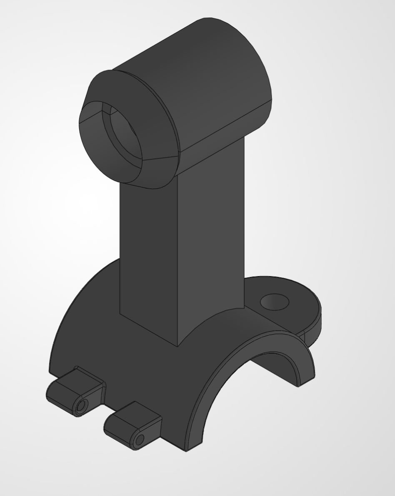
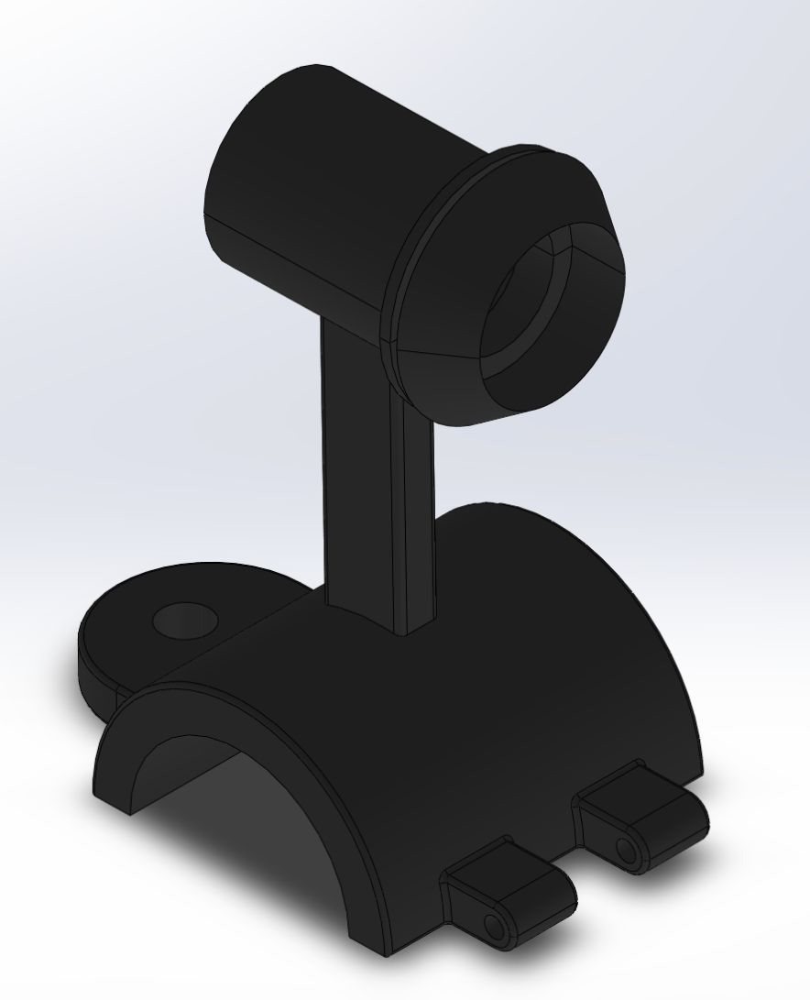
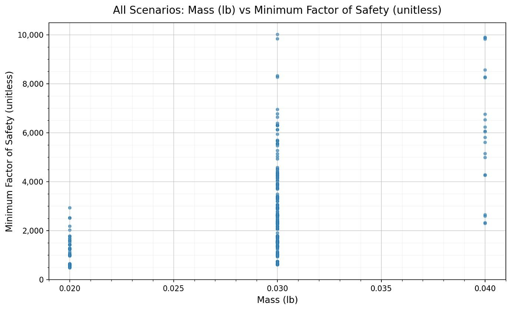
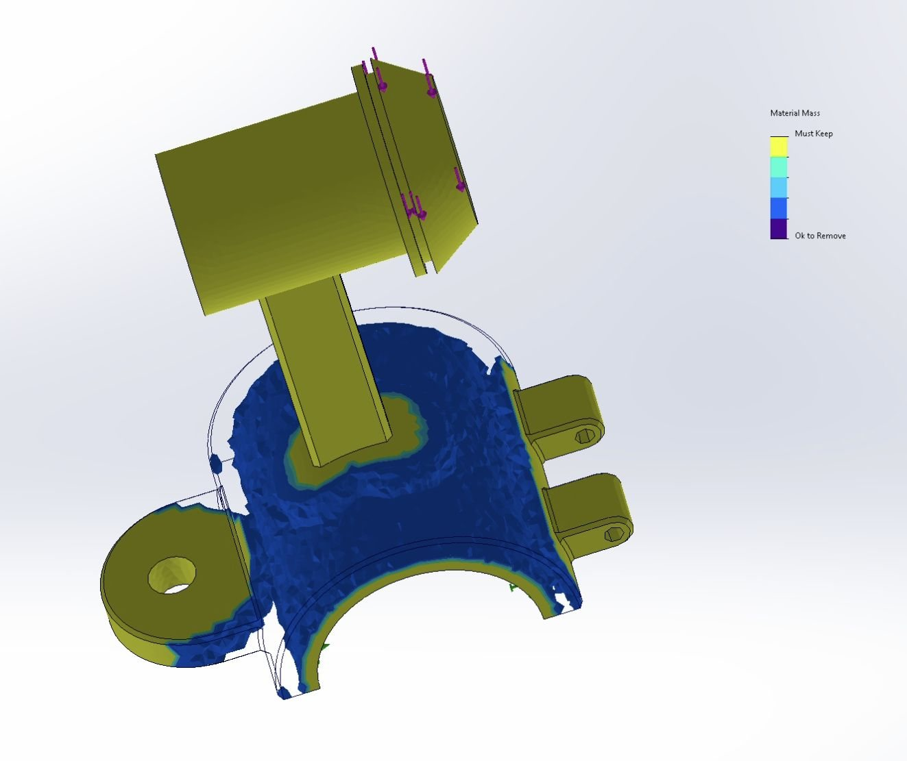
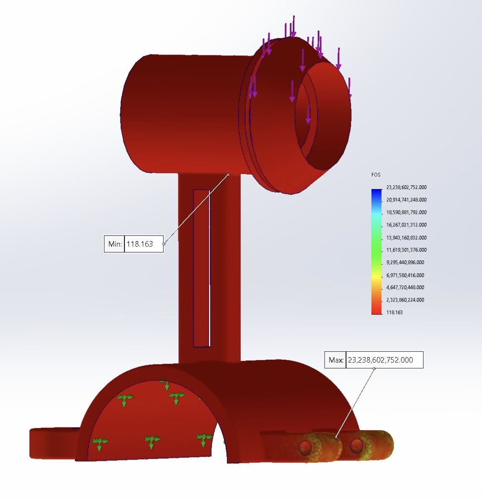

Rebuilt a non-robust baseline model into a simplified, optimization-ready mount, then evaluated geometry changes against mass and minimum factor of safety.
0.2055 NHorn load
Nylon 6/10Material
270Design scenarios
Baseline to parametric design
Variables studied: bridge width, length, and fillet radius.



Topology-informed redesign
Moving from parametric optimization to targeted material removal.


≈30%
Mass reduction from the selected parametric design. Final factor of safety remained above 100.
Engineering takeaway
Simplify an unstable CAD model, define meaningful parameters, evaluate design-space tradeoffs, then use topology results to guide final geometry.